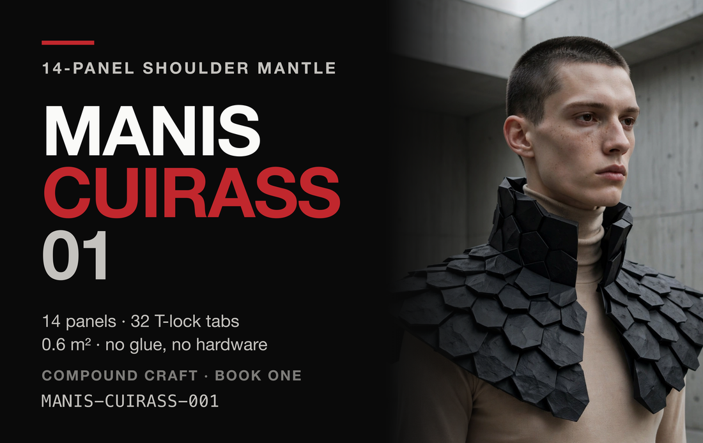
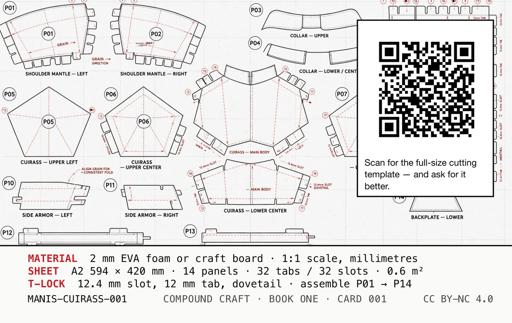

What it is
A shoulder mantle. Fourteen flat panels, cut from one A2 sheet at full size, that lock into each other with tabs and become a curved pangolin-scale collar sitting over both shoulders. You cut it out of 2 mm EVA foam or craft board. Nothing is glued, nothing is screwed, and there is no visible hardware anywhere on it — the geometry is the fastener.
It is a costume and armour piece, and it is also a small lesson in flat-pack: the whole thing is a sheet until the moment you seat the last tab, and then it is rigid.
- SHEET
- A2 · 594 × 420 mm · 1:1, millimetres
- PANELS
- 14 · assembled in order P01 → P14
- JOINS
- 32 tabs into 32 slots
- LOCK
- T-lock dovetail · 12 mm tab into a 12.4 mm slot
- MATERIAL
- 2 mm EVA foam, or craft cardboard / fiberboard
- AREA
- approx. 0.6 m² of material
- HARDWARE
- none · no glue required
How to build it
AN AFTERNOON, PLUS DRYING TIME IF YOU GLUE IT
-
Print the template at true scale
The blueprint is drawn 1:1 in millimetres on an A2 sheet, 594 × 420 mm. Print it at 100% / “Actual size”. No home printer takes A2, so tile it across A4 or Letter and trim the overlap — every consumer print dialogue can do this, and the tiles line up because the drawing is dimensioned, not fitted.
“Fit to page” is the one setting that ruins this. It shrinks the sheet by a few percent, which is invisible on paper and fatal in the tabs: at 97% a 12 mm tab is 11.6 mm and every joint is loose.
-
Check the ruler before you cut anything
There is a 10 cm calibration ruler printed on the sheet for exactly this moment. Put a real ruler on it. It must measure 100 mm. If it does not, the print scale is wrong — change the setting and print again. This is thirty seconds against 0.6 m² of material and an afternoon.
-
Cut every solid black line through
Solid black is a cut. Take the blade all the way through the material, one panel at a time, and keep the offcuts until the dry-fit is done — a mis-cut tab can be patched from a scrap of the same sheet.
-
Score the dashed red lines — do not cut them
Dashed red is a fold. Score it about halfway through the material on one face only, then valley-fold 180° so the two faces come together. A scored fold is crisp and stays where you put it; an unscored fold in 2 mm stock bulges and fights the tabs for the rest of the build.
-
Keep the grain arrows pointing the same way
The arrows are grain direction, and they are on the panels because material has a direction whether or not the drawing admits it. Board folds cleanly along the grain and cracks across it; foam has a roll direction that wants to curl back. Lay every panel on the sheet with its arrow the same way before you cut.
-
Match the circled numbers, edge to edge
Each edge carries a circled index. 1 goes to 1, 2 goes to 2, and so on — every edge has exactly one partner, so a number that is left over means a panel is the wrong way round rather than missing.
-
Dry-fit in order, P01 through P14
Slide each 12 mm tab into its 12.4 mm slot. The order matters: later panels close over earlier joins, and a mantle assembled out of order has a tab you can no longer reach. Work with your fingers, not a mallet — if a tab will not seat, the fold above it is not fully closed.
12.0 TAB 12.4 SLOT 0.4 mm of clearance is the whole fit: tight enough to hold under its own friction, loose enough to seat by hand.
-
Glue only if you want it permanent
It holds dry — that is the design. Adhesive is a choice you make after the whole mantle has been dry-fitted and worn once, because glue is the step with no undo and the dry-fit is where you find out a panel is mirrored. Contact cement on foam, PVA on board.
Reading the sheet
FOUR MARKS, AND THEY MEAN DIFFERENT THINGS
Where the images come from
The editorial image is a synthetic render. The figure on the card front was generated by an image model (run PB-47-92-12). It is not a photograph, it is not anyone’s likeness, and it depicts no real person. You cannot tell that by looking, which is the entire reason it is written here on the page a stranger reads rather than only in a metadata file next to it.
The blueprint is not editorial. It is the fabrication template: 1:1, in millimetres, cut lines, fold lines, index numbers, tabs and slots. If the render and the sheet ever disagree about this object, the sheet is right — the render is a picture of it, the sheet is the thing.
Licence
The design — the panel geometry, the sheet, the card art — is CC BY-NC 4.0. Cut it, remix it, print it for yourself, teach a class with it, put it on a stage: credit it, and do not sell it. The code in the vibe-cards repository is MIT and is not affected by this; two different things, two different grants, and the page that hands you the file is the right place to say so.
vc1|MANIS-CUIRASS-001|Manis Cuirass 01|2026-08|CC-BY-NC-4.0|vibe-cards
The chip carries that line in plaintext, next to the address. It needs no server and no network to say what this card is — so if this page ever dies, the card still knows.
PRINT IT YOURSELF — this card is a template in Card Studio, the same free app that printed the original. It opens holding this card, both faces.
The log
This card’s address can never change, so anything new about it has to land here: corrections, a fold order that turned out to be better, a material someone tried that worked. Tap the card again in a month and there should be something on this page that is not on it today.
Want it changed?
Ask for anything. A version that tiles onto A4 without trimming, a mirrored left shoulder, 3 mm foam instead of 2, a smaller size for a kid, a panel map with bigger numbers. Whatever would make it work for you.
No account, no email, nothing to sign up for. Just write and tap. It goes into a queue someone works through, not into an inbox.